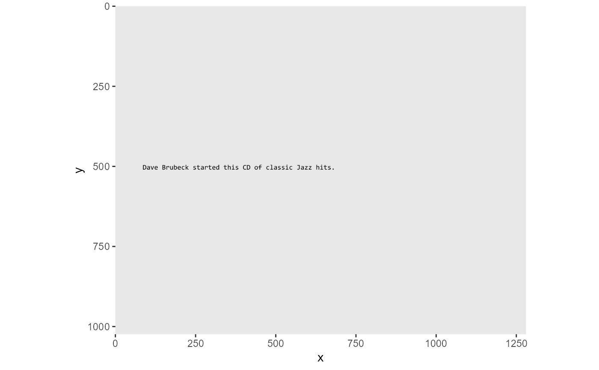
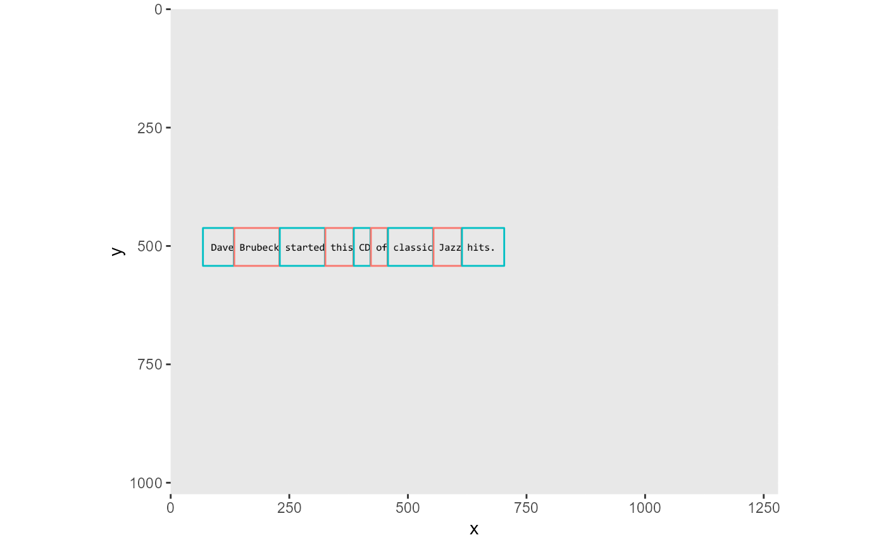

Convert a region file to an SR interest area file. We only handle static IAS files.
region2SRias(
regfile,
iasfile = NULL,
size = c("big", "small"),
yoffsets = NULL,
xpad = NULL
)Region file to read, formatted per Tao Gong's Python code.
If NULL (default) then create the output filename by stripping ext from regfile and adding ".ias". If not NULL, then this should be a string specifying output filename.
Extract "big" or "small" interest areas from region file.
If NULL (default), use y coordinates as read from region file for Interest Areas. If not NULL, must be a 2-vector of integers indicating extent above and below baseline for Interest areas (in pixels). Both values should be positive. If yoffsets is not NULL, then the 'size' argument is ignored.
If NULL (default), use x coordinates for Interest Areas as read from region file. If not NULL, must be a 2-vector of integers indicating extent leftward and rightward to expand the Interest Areas for the first and last words on each line (in pixels). Both values should be positive.
Invisibly returns a data.frame containing a set of Interest Areas, but typically called for its side effect of writing an "*.ias" file.
TODO: Need to incorporate some flexibility as to which columns in the 'region' file will be accessed for which bits of information. Right now, column names are hard-coded.
library(ggplot2)
reg <- system.file("/extdata/target01A.region.csv", package="FDBeye")
stim <- system.file("/extdata/target01A.png", package="FDBeye")
ias <- region2SRias(reg, yoffsets=c(50,30), xpad=c(18,18))
fp <- fixPlot(data = data.frame(x=-1, y=-1),
bgImage = stim, bgAlpha=1,
xyMap = ggplot2::aes_string(x='x', y='y'),
pointMap=ggplot2::aes_string(alpha=0)
)
#> Warning: Removed 1 rows containing missing values (geom_point).

fp + geom_rect(data=ias, inherit.aes=FALSE,
aes(xmin=x1+1, xmax=x2, ymin=y1, ymax=y2,
fill=NULL, color=as.factor(WordID%%2)), alpha=0) +
guides(color=FALSE)
#> Warning: `guides(<scale> = FALSE)` is deprecated. Please use `guides(<scale> = "none")` instead.
#> Warning: Removed 1 rows containing missing values (geom_point).
